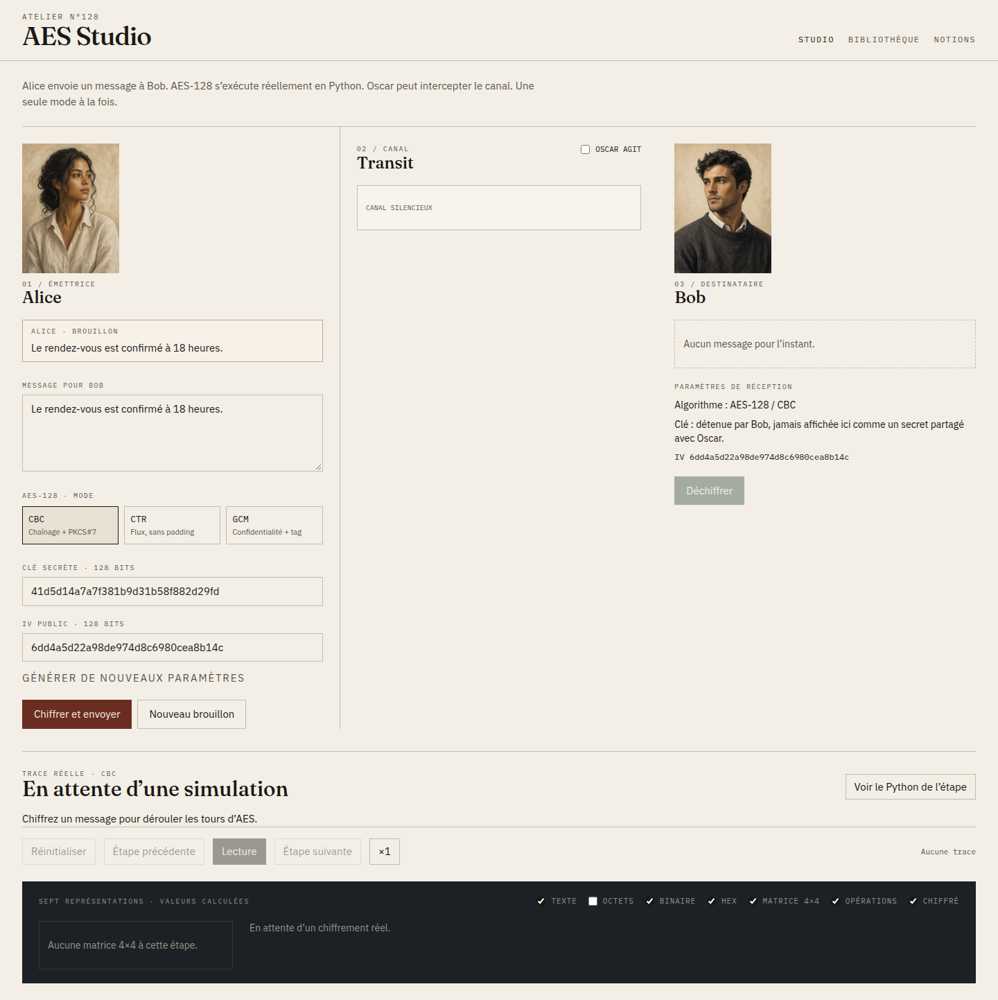
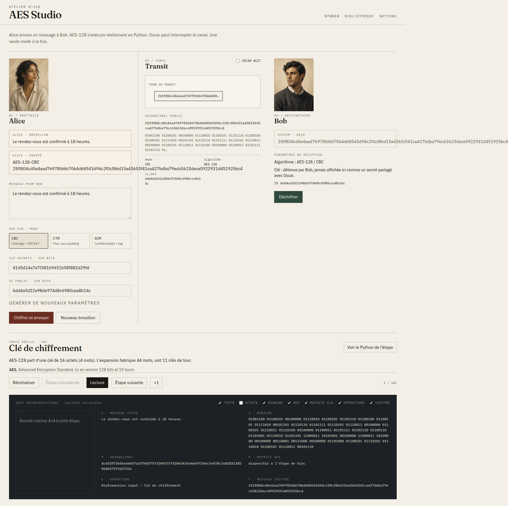
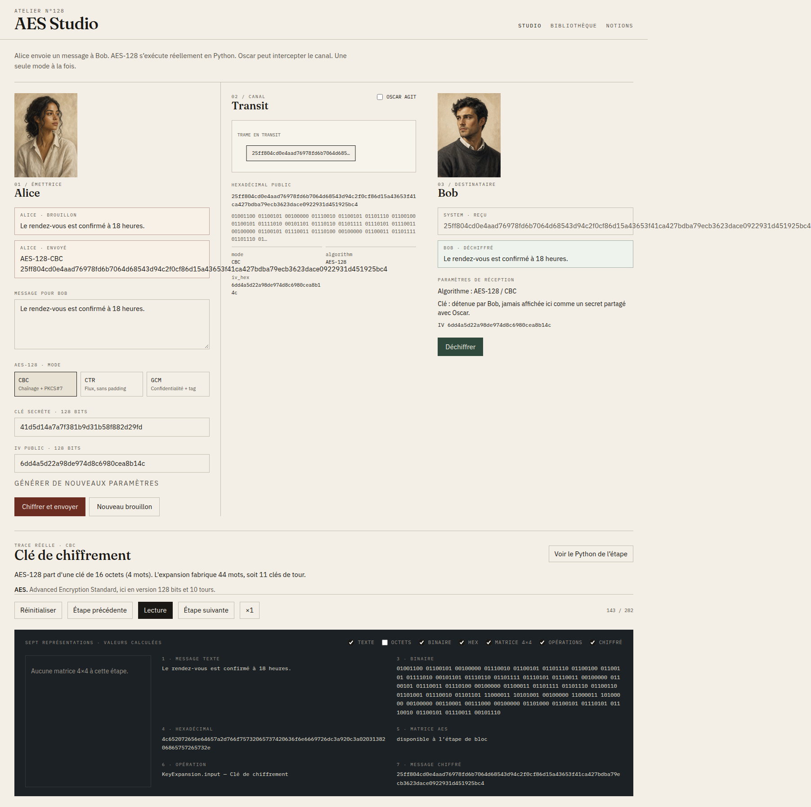
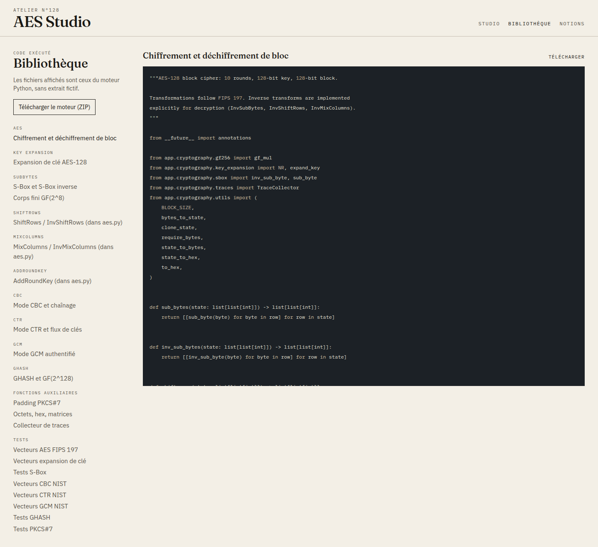
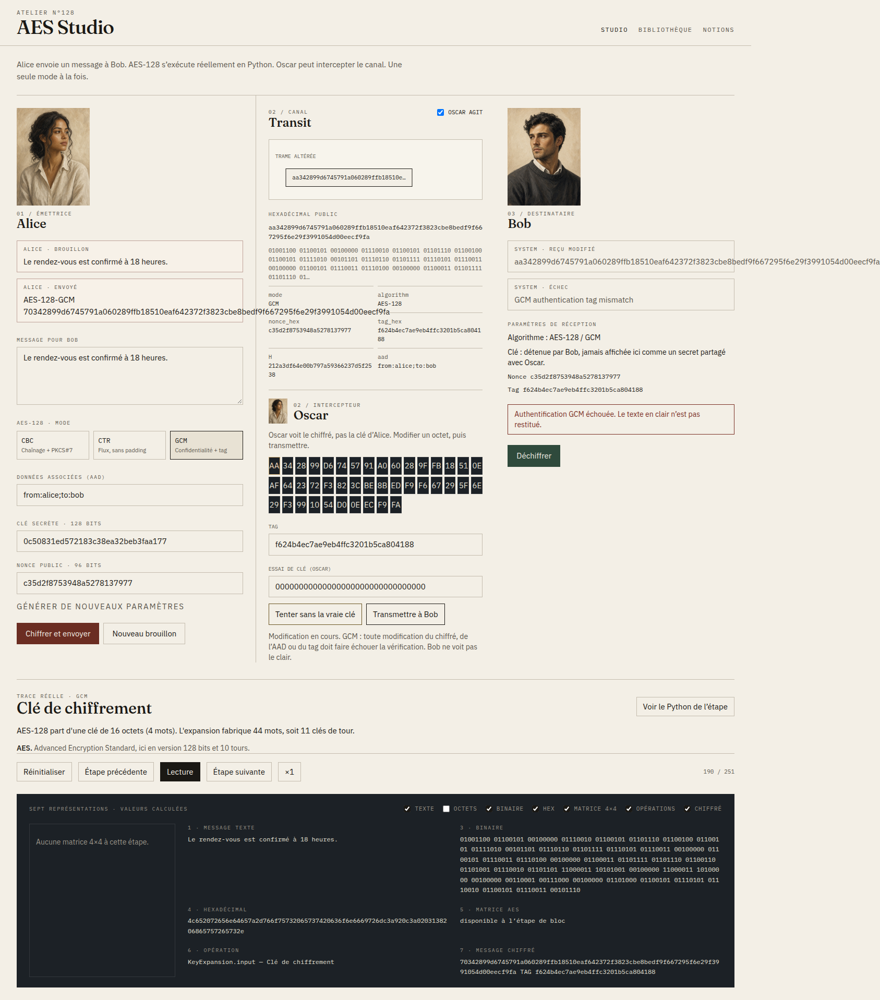
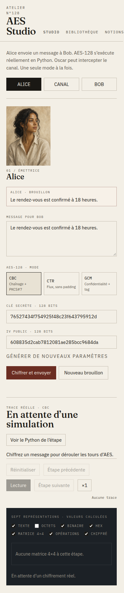

AES Studio est une application pédagogique : AES-128, CBC, CTR et GCM sont calculés en Python, sans bibliothèque AES. L’interface React rejoue la trace. Ce n’est pas une implémentation de production.
Alice chiffre, Oscar peut modifier le canal, Bob déchiffre. Un seul mode à la fois. Les valeurs affichées viennent du backend.
| Fonction | État |
|---|---|
| AES-128 maison, CBC, CTR, GCM, GHASH | Terminé |
| Studio Alice / Bob / Oscar, traces, 7 représentations | Terminé |
| Bibliothèque Python + ZIP, glossaire | Terminé |
| API FastAPI, Docker, 50 tests pytest | Terminé |
| Suite e2e versionnée | Non livrée (Chrome headless hors dépôt) |
| Nonce GCM ≠ 96 bits | Non implémenté (démo standard) |
Vite (43123) → /api → FastAPI (48180) → app/cryptography. Trace pré-calculée : le pas arrière ne recalcule pas AES. Aléatoire : secrets.token_bytes.
S-Box générée (inverse GF(2^8) + affine). Expansion de clé RotWord/SubWord/Rcon. CBC + PKCS#7. CTR sans padding. GCM : H = AES(0), J0 = nonce∥1, GHASH, tag obligatoire avant le clair. Réutilisation (clé, nonce) refusée.
Studio, Bibliothèque, Notions. Direction éditoriale (papier, Fraunces, IBM Plex). Oscar utilise le portrait d’Alice.
Studio initial

CBC après chiffrement réel

Bob a retrouvé le clair

Bibliothèque : code Python exécuté

GCM : octet modifié, authentification échouée, pas de clair

Mise en page étroite

GET /api/health, POST /api/params/generate, POST /api/key-expansion, POST /api/session/encrypt, POST /api/session/decrypt, GET /api/source, GET /api/source/{id}, GET /api/source/{id}/download, GET /api/source/archive.zip, GET /api/glossary.
cd backend && python3 -m pytest — 50 réussis, 0 échec (31 octobre 2026).
FIPS 197 A.1 / B / C.1, SP 800-38A CBC F.2.1 et CTR F.5.1, SP 800-38D GCM cas 1–4, padding, tamper, API, nonce reuse. Interface vérifiée au Chrome headless : CBC aller-retour, GCM rejeté après altération.
Pas de secret dans Git. Pas de log des clés. Pas d’API externe. Limite 256 octets. Moteur pédagogique, temps non constant.
cd backend && python3 -m uvicorn app.main:app --host 127.0.0.1 --port 48180 cd frontend && npm run dev # ou : docker compose up --build
Interface : http://127.0.0.1:43123
Vecteurs CBC/GCM d’abord mal recopiés ; AES était déjà juste. Attaque CBC d’un seul bloc casse PKCS#7. Traces longues (un tour = plusieurs étapes). Second chiffrement GCM sans nouveau nonce refusé.
Outil pédagogique opérationnel. Améliorations : e2e dans le CI, nonce GCM variable, comparaison visuelle MixColumns. Ne pas utiliser pour protéger des données réelles.